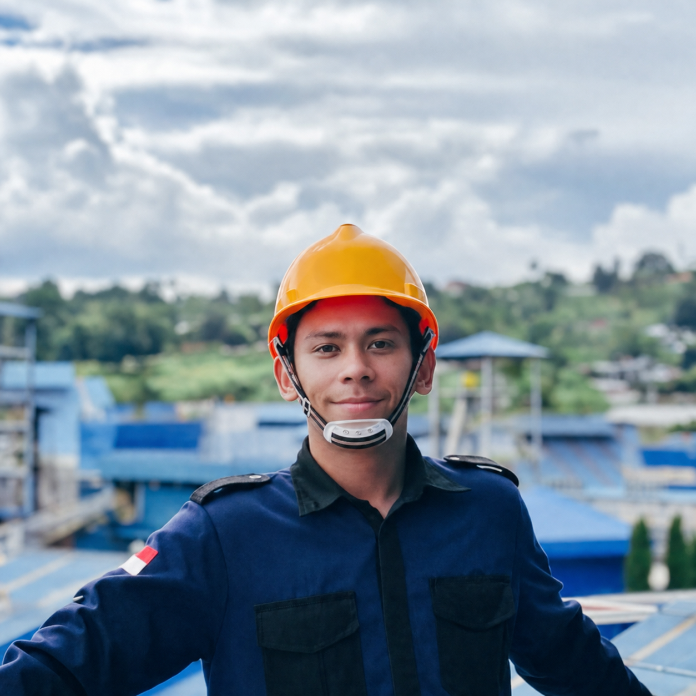
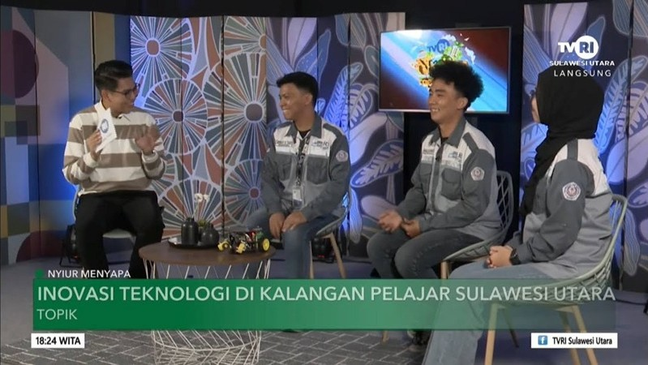
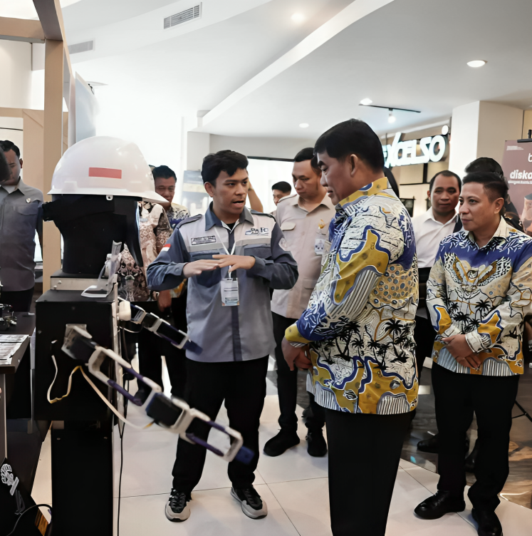
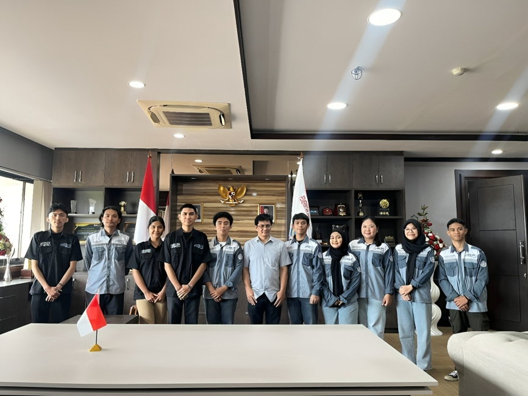
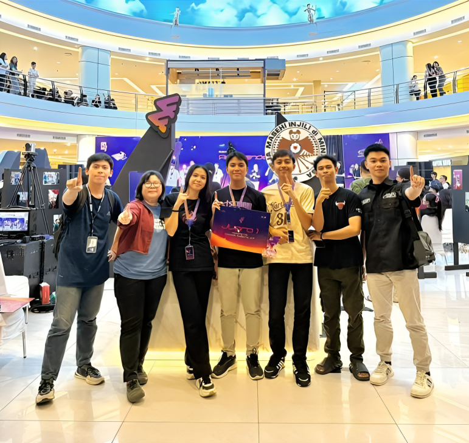
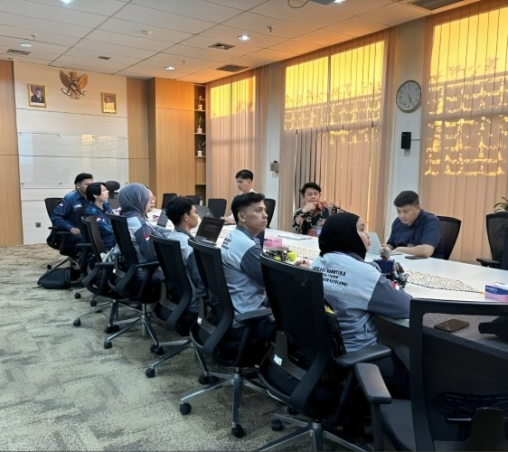
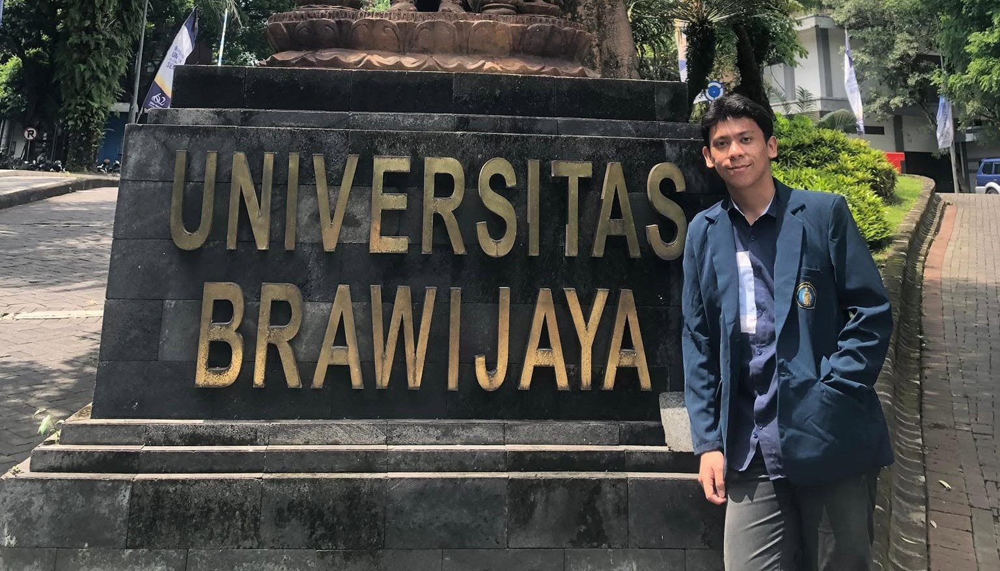
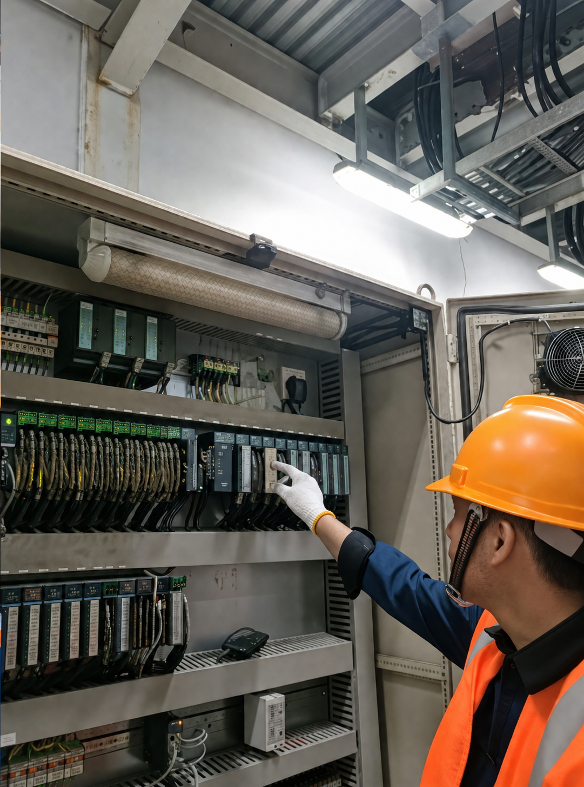

Mahasiswa Teknik Elektro UNSRAT yang berfokus pada sistem kendali, IoT, dan Edge AI. Memiliki rekam jejak riset predictive maintenance, otomasi industri Wilmar Group, serta kepemimpinan inovasi robotika.
CV
Kontes Robot SMA/SMK se-Sulawesi Utara yang diinisiasi sebagai program kerja UKM Edukasi Robotika FT-UNSRAT — membuka akses kompetisi robotika bagi pelajar di seluruh provinsi.
Membawa inovasi keluar kampus melalui audiensi strategis dengan Bank Indonesia untuk event CBP Rupiah, serta mementori tim hingga meraih Juara 1 FMRG kategori Robotic, Coding & IoT.

Narasumber dalam program TVRI membahas kemajuan robotika di kalangan pelajar.

Memperkenalkan kemajuan teknologi robotika AI secara langsung kepada Pemerintah Provinsi.

Sponsorship & kolaborasi dengan staf khusus Gubernur bidang pendidikan menjelang SURO CUP 2025.

Mementori tim memenangkan kompetisi melalui inovasi alat komunikasi inklusif bagi jemaat tunarungu.

Pertemuan strategis dengan perwakilan BI guna membahas rencana kerja sama pada event CBP Rupiah.

Mengikuti perkuliahan dan berkolaborasi secara akademik di Departemen Teknik Elektro UB.
Membimbing perancangan dan pemrograman robot dasar.
Mengajarkan konsep dasar hingga lanjut sistem kendali.
Membimbing analisis kestabilan dan desain kontroler.
Pendalaman komponen elektronik dan instrumentasi.
Mengaitkan teori otomasi dengan penerapan industri nyata.
Mengajar rekan mentor serta melatih desain dan slicing 3D.
Memimpin arah kebijakan dan program kerja UKM tingkat Universitas.
📄 Lihat SertifikatMendampingi kepemimpinan dan eksekusi manajerial internal.
📄 Lihat SertifikatLolos seleksi program pertukaran mahasiswa di Teknik Elektro UB.
📄 Lihat SertifikatTerlibat langsung dalam operasional teknis kontes robot pertama berskala provinsi.
📄 Lihat SertifikatPeserta Kontes Robot Divisi Search and Rescue mewakili perguruan tinggi.
📄 Lihat Sertifikat
"Apresiasi tertinggi untuk inovasi sistem peringatan darurat LoRa yang diusulkan. Rancangan blueprint yang dibuat sangat detail dan antisipatif terhadap potensi kegagalan infrastruktur."
Arsitektur predictive maintenance waktu-nyata untuk estimasi Remaining Useful Life, model LSTM Supervised Binary Classifier di-deploy pada ESP32.
Inovasi robot interaktif yang diperkenalkan secara resmi di ajang Sulut Riset Inovasi dan Expo 2025.
Inovasi perangkat komunikasi untuk jemaat tunarungu. Meraih Juara 1 pada Festival Media Remaja GMIM (FMRG).
Robot Search & Rescue berkaki enam dengan implementasi Inverse Kinematics.
Robot lengan pneumatik serta line follower dengan kendali PID.
Pengembangan asisten AI independen untuk otomasi tugas dan interaksi.